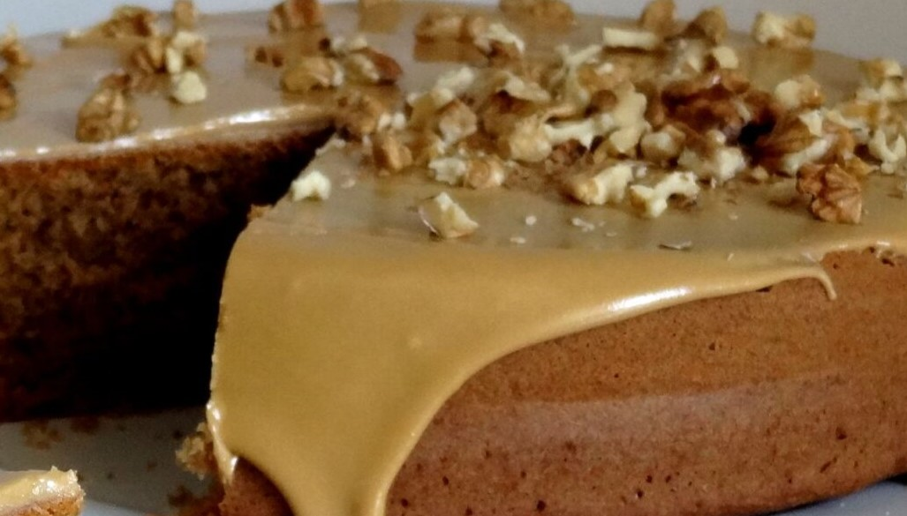

Gâteau au café et aux noix

- • Si vous n'avez pas d'essence de café, vous pouvez la remplacer par du café instantané bien fort.
Ingrédients :
- 115g de margarine molle
- 115g de sucre en poudre
- 60g de noix hachées
- 2 œuf
- 1 cuillère à soupe d’essence de café
- 115g de farine
- Une cuillère à café de levure chimique
- Une pincée de sel
Garniture :
- 85 g de margarine molle
- 225g de sucre glace
- Noix entières pour décorer
- 2 cuillères à café d'essence de café
- 2 cuillères à café de lait
Instructions :
- Graisser deux moules à gâteau de 18 cm de diamètre et tapisser les fonds de papier sulfurisé beurré.
- Dans un bol, mettre la margarine, le sucre, les œufs, les noix hachées et l'essence de café. Tamiser
la farine, le sel et la levure chimique par-dessus. Mélanger tous les ingrédients avec une cuillère
en bois pendant 2-3 minutes jusqu'à ce que la préparation soit bien homogène.
- Diviser la pâte dans les moules préparés, lisser la surface, puis cuire au centre du four préchauffé
à 160°C (thermostat 3) pendant 35-40 minutes, ou jusqu'à ce que le gâteau soit bien gonflé et
rebondisse au toucher.
- Une fois cuits, démouler les gâteaux sur une grille et laisser refroidir avant de retirer le papier
sulfurisé.
- Pendant ce temps, préparer la garniture : battre la margarine, le sucre glace tamisé, le lait et
l'essence de café dans un bol jusqu'à ce que la préparation soit lisse.
- Coller les deux gâteaux ensemble avec les deux tiers de la garniture. Recouvrir le dessus du gâteau
avec le reste de la garniture et décorer en traçant un motif décoratif avec une fourchette. Ajouter
les noix entières sur le dessus.